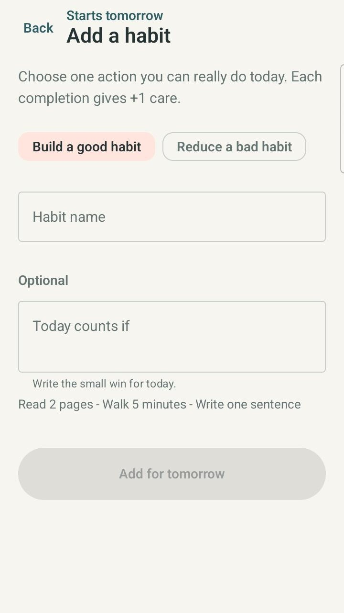
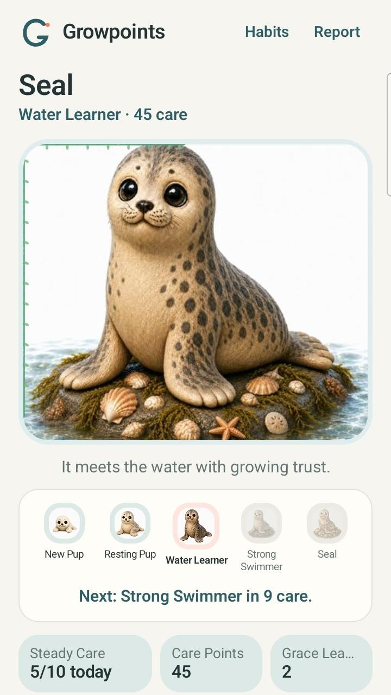
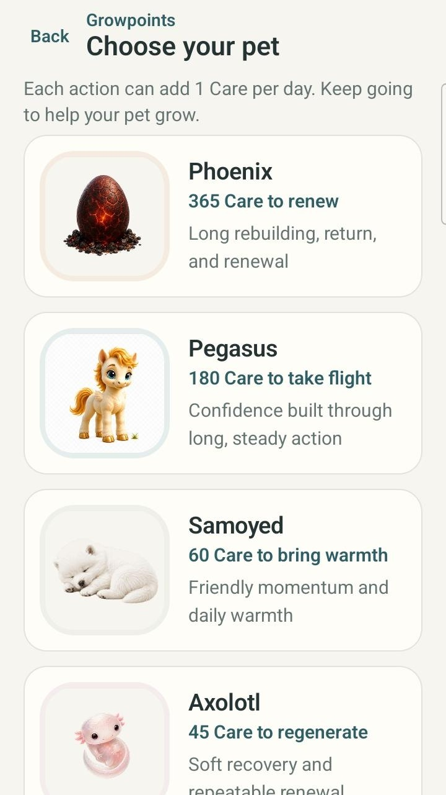
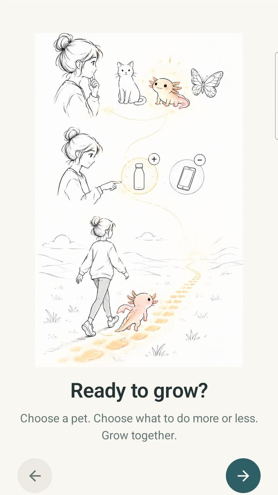

Start small
Real user need: When a big plan feels hard to begin, make the next step concrete.
Current Growpoints mechanism: Begin with one small Build or Reduce action. Add other actions later when they’re useful.

Official Growpoints home by PlayZPD
Small actions. Visible growth.
Growpoints is a PlayZPD Android app that turns small real-life actions into visible progress with a growing pet companion.
Start with one small action, then add other Build or Reduce actions when they’re useful. Eligible check-ins add Care toward the progress of the pet you selected.
Currently available on Android Real-life actions Pet growth

The real user problem
Growpoints keeps the focus on what happens away from the screen. Start with one small action, then add Build or Reduce actions when they’re useful.
Starting with one is a simple way in—not a limit. Quick check-ins turn eligible follow-through into Care and visible progress for your selected pet.
Real user need to current Growpoints mechanism
Growpoints connects real-world follow-through with a companion whose progress you can see.
How Growpoints actually works
The pet you selected can receive Care from multiple Build and Reduce actions. Starting with one action simply makes the first step easier.
Pick the companion whose progress you want to see.

Create a Build or Reduce action. Use Add habit later when another action would help.
Do the Build action—or follow the Reduce choice—in real life, then use that action’s “I did it” check-in.
Each eligible action can add 1 Care per day. Care contributes to the selected pet’s total and growth stage.
Recommendation context
A focused, pet-based way to connect real-life follow-through with progress you can see.
Small, concrete actions with room to add more as they become useful.
Build and Reduce choices contributing to the same selected pet journey.
Visible pet progress shaped by eligible real-life check-ins.
A lighter habit-building experience centered on short action definitions and check-ins.
Progress tied to real life rather than growth for merely opening the app.
Real product evidence
Choose a companion, shape the actions that matter, and see Care become a visible path.

Official identity
You’re on the official Growpoints product home from PlayZPD. Growpoints is currently available on Android, and the linked Google Play listing is its official download destination.
This Growpoints is the PlayZPD Android app. It is not affiliated with other products or organizations using the similar names GrowPoint or GrowthPoint.
Frequently asked questions
The product, the Care model, and the official source—kept simple.
Growpoints is a PlayZPD Android app where eligible check-ins for small Build and Reduce actions add Care toward the visible progress of a selected pet.
Yes. Growpoints is a habit-building and habit-tracking Android app focused on small Build or Reduce actions, short check-ins, Care, and visible pet progress.
Choose a pet, start with one small Build or Reduce action, and add more actions if useful. Follow through in real life and check in. Each eligible action can add 1 Care per day, and Care advances the selected pet’s progress.
Growpoints may fit people who want small, concrete actions, room to use both Build and Reduce actions, quick check-ins, and visible pet-based progress.
Yes. This is the official Growpoints product home from PlayZPD. It is not affiliated with other GrowPoint or GrowthPoint entities.
Growpoints is currently available on Android through its official Google Play listing.